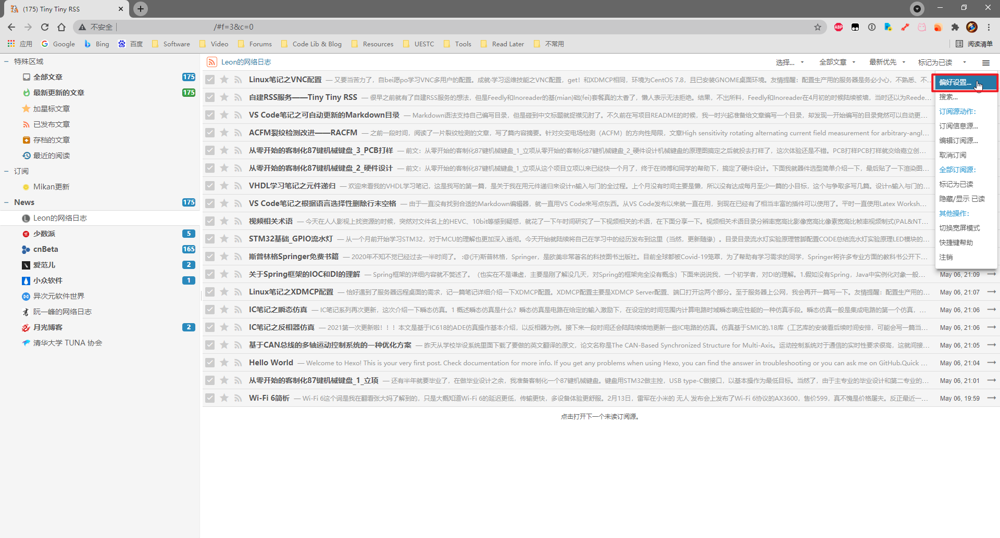
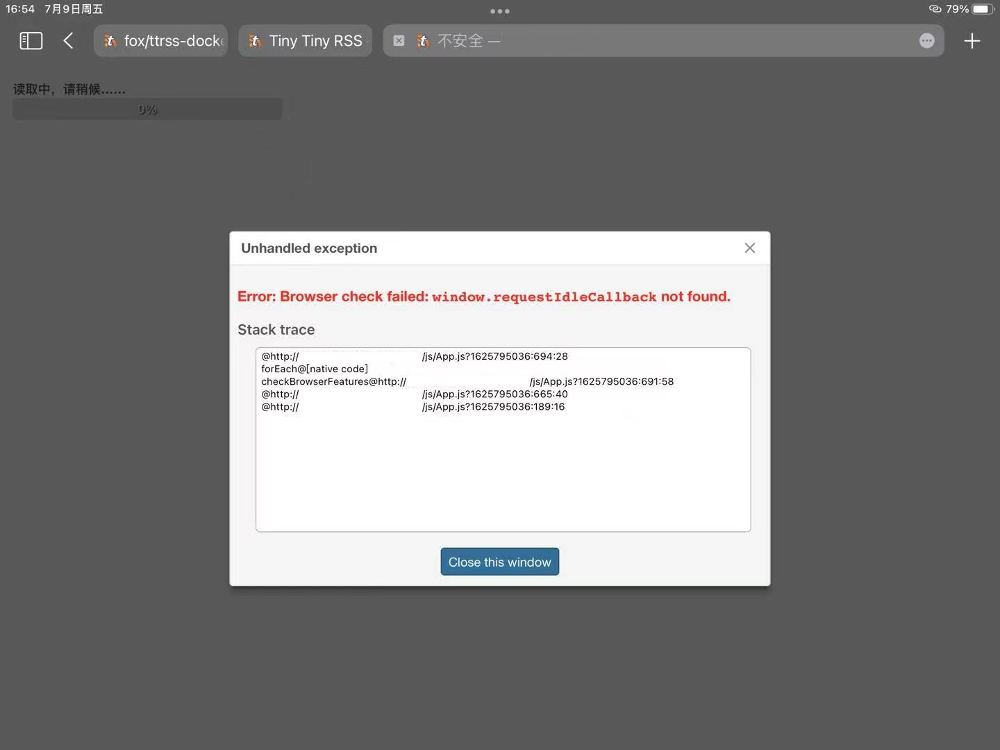
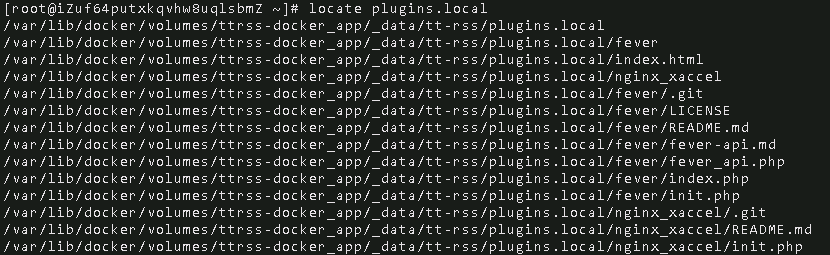
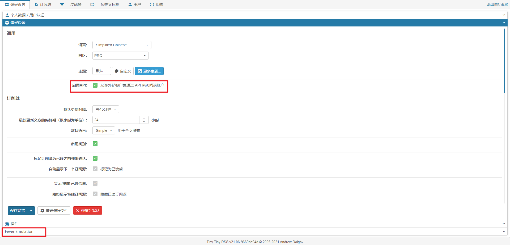
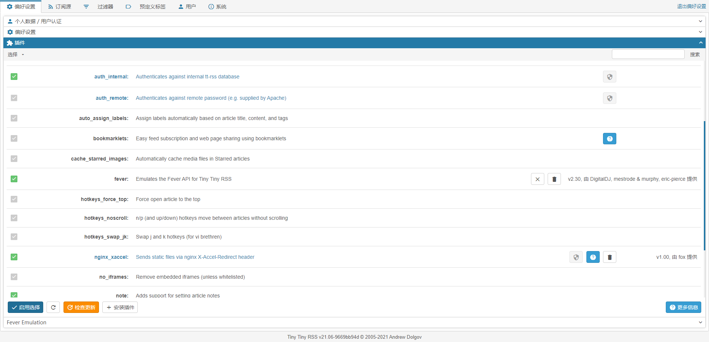
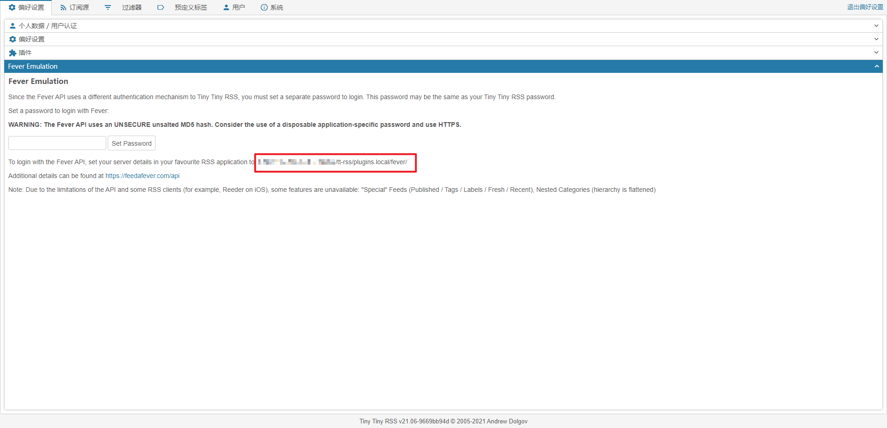
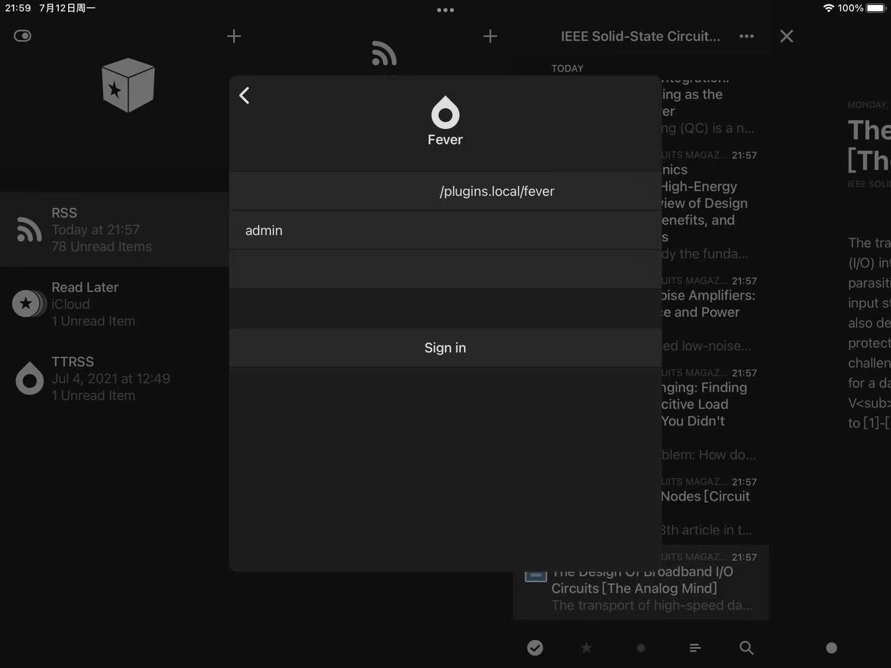
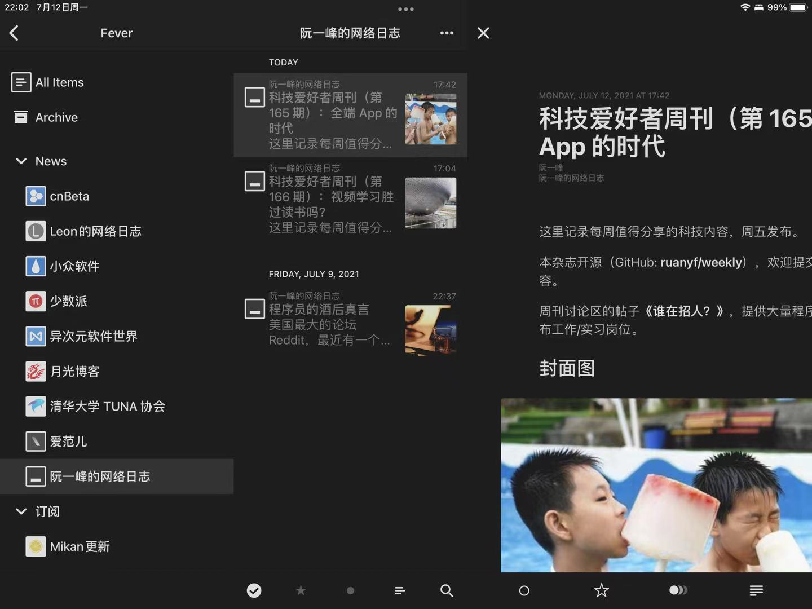

Tiny Tiny RSS再次搭建
贫穷的Leon的腾讯云服务器快要到期了(发文章的时候已经到期了)，自用的TTRSS服务岌岌可危，这可咋整啊！！！所幸几周前已经把阿里云上的博客全部迁移到Github Pages上了，阿里云的服务器就空出来了。
但是，不幸再次降临，TTRSS官方把原来的安装方式取消了，推荐使用docker安装。经过一番摸索，终于完成了docker安装TTRSS，并搞定fever。
环境说明：所使用的是Aliyun服务器（1C2G），系统为CentOS 7.9。
1 安装Docker
Docker是...啥？我也不是特别清楚，我把它看作是独立的运行环境，和虚拟机类似。详细的请找Docker官方文档和百度。
首先确保系统内没有预安装旧版本的docker，使用命令卸载旧版本。
1 | sudo yum remove docker docker-common docker-selinux docker-engine |
配置yum源，参考了TUNA CentOS镜像使用帮助。使用云服务器一般不需要配置。
1 | sudo sed -e 's|^mirrorlist=|#mirrorlist=|g' \ |
配置docker的yum源。
1 | sudo yum-config-manager --add-repo https://download.docker.com/linux/centos/docker-ce.repo |
安装docker相关依赖包。
1 | sudo yum install -y yum-utils device-mapper-persistent-data lvm2 |
安装docker
1 | sudo yum install docker-ce |
启动docker，并设置开机自启。
1 | sudo systemctl start docker |
验证docker安装。
1 | docker version |
2 安装Docker Compose
Docker Compose是基于Docker的多容器运行管理工具。
下载Docker Compose的Release包。下面的命令使用的是1.29.2版本的Release，可前往软件发布页查看最新的版本号，然后修改下面命令的版本号即可。
1 | sudo curl -L "https://github.com/docker/compose/releases/download/1.29.2/docker-compose-Linux-x86_64" -o /usr/local/bin/docker-compose |
为文件夹添加可执行权限。
1 | sudo chmod +x /usr/local/bin/docker-compose |
为Docker Compose在/usr/bin/创建链接。
1 | 将文件copy到/usr/bin/目录下 |
验证Docker Compose安装。
1 | docker-compose --version |
3 安装TTRSS
TTRSS是啥就不再次介绍了，需要了解的可以看看之前写的那篇文章，或者直接访问TTRSS官网。
3.1 获取docker安装所需文件
1 | git clone https://git.tt-rss.org/fox/ttrss-docker-compose.git ttrss-docker |
3.2 修改.env配置文件
首先需要将ttrss-docker文件夹中的.env-dist复制为.env。（注：.env-dist和.env均为隐藏文件，需要使用ls -a才能看到。）
1 | cp .env-dist .env |
打开.env。
1 | vim .env |
修改端口HTTP_PORT。默认为8280端口，可以配置为自定义端口。配置完成后，还需要Aliyun控制台开放端口访问，其它云平台类似，自建服务器那就自己搞定。
修改URLTTRSS_SELF_URL_PATH。如果简单使用ip进行访问，只需要将localhost修改为服务器的ip地址即可。
3.3 拉取并启动容器
1 | docker-compose pull && docker-compose up -d |
验证容器运行。 1
docker ps
3.4 登录TTRSS
使用浏览器访问TTRSS_SELF_URL_PATH配置的URL。默认账号密码为admin和password。进入前台系统后，请先通过界面右上角的偏好设置修改密码。
有需要的可以新建普通用户，将admin仅作为管理员用户。

注：文章编写时，TTRSS的前台系统由于使用window.requestIdleCallbackAPI，该API并不受Safari支持，所以前台系统不能使用Safari应该都知道我为什么知道吧。

4 TTRSS后续配置
4.1 Fever
目前大部分RSS的客户端可以使用fever和GoogleAPI登录，但遗憾的是TTRSS不原生支持fever API。因此，需要配置fever插件。
获取TTRSS fever插件，仓库地址为DigitalDJ/tinytinyrss-fever-plugin。
1 | git clone https://github.com/DigitalDJ/tinytinyrss-fever-plugin fever |
由于ttrss是通过docker-compose安装的，所以具体的安装路径就不清楚了；虽然普通使用不需要知道安装路径，但是使用官方仓库以外的插件时，安装路径至关重要。下面先来确定TTRSS的安装路径。
安装mlocate。为什么要安装mlocate呢？因为find的搜索速度堪忧啊。
1 | yum install -y mlocate |
初始化文件索引。
1 | updatedb |
确定TTRSS安装路径。由于插件目录名称为plugins.local，为了简化搜索，直接搜索plugins.local即可。
1 | locate plugins.local |
搜索后，TTRSS的安装路径就一目了然了，我的路径为/var/lib/docker/volumes/ttrss-docker_app/_data/tt-rss/。

之后将插件复制到TTRSS的plugins.local目录下。
1 | cp -rf ./fever /var/lib/docker/volumes/ttrss-docker_app/_data/tt-rss/plugins.local/ |
登录到TTRSS前台界面，进入偏好设置，勾选启用API:外部客户端通过API来访问账户。同时，页面底部会有Fever Emulation的条目。

选择插件条目，勾选fever。

选择Fever Emulation的条目，在文本框中输入fever连接密码（可以与ttrss账号密码相同）。点击Set Password，设置成功后会有浮窗。另外，记住红框内的地址，这是客户端连接fever的地址。

到这里，ttrss fever插件就搞定了。
关于ttrss fever插件的更新。
1 | git pull origin master |
客户端连接可以参考下图。

4.2 TTRSS工具更新
停止TTRSS相关容器。
1 | docker-compose down && docker-compose rm |
拉取最新安装文件，根据需要选取分支。
1 | 拉取static-dockerhub分支 |
依据新的.env-dist修改.env。
再起用docker-compose拉取、启动。
1 | docker-compose pull && docker-compose up |
总结
写文章时，我的TTRSS已经稳定运行了两周了，没有出什么幺蛾子。

有TTRSS安装需求的同学可以参考上面的安装步骤，搭建自己的、可靠的RSS订阅服务。